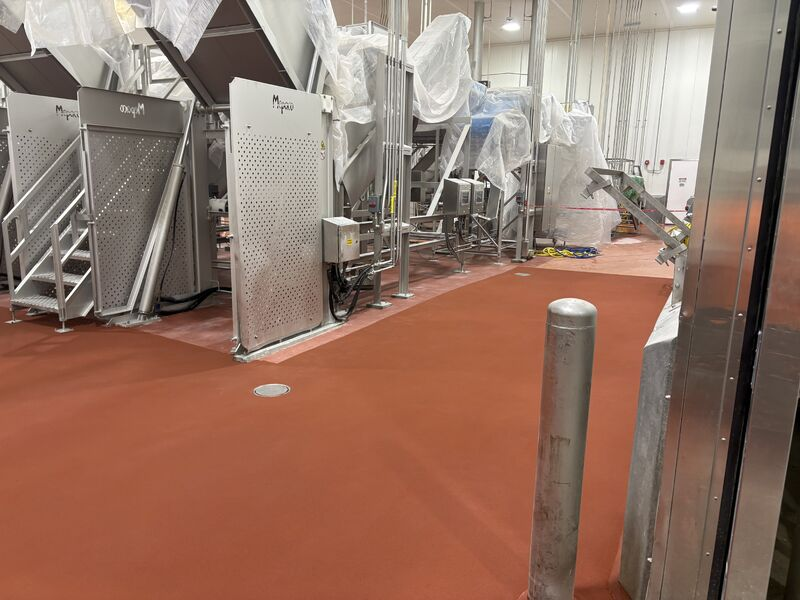
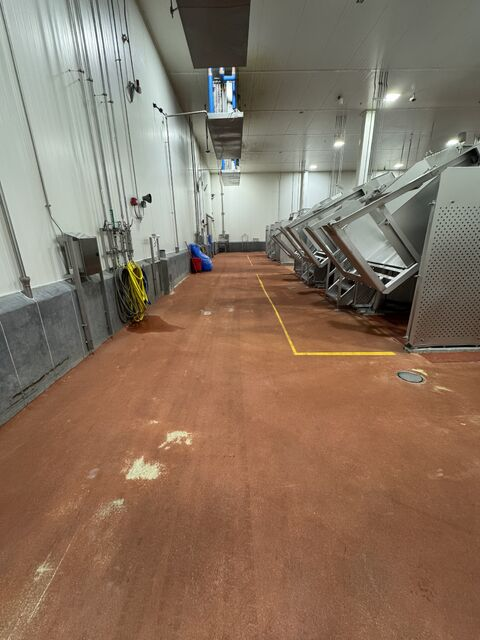
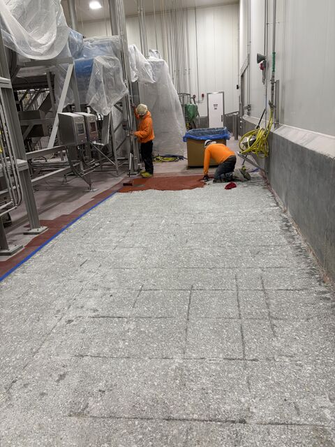
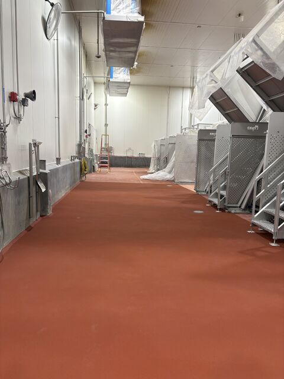
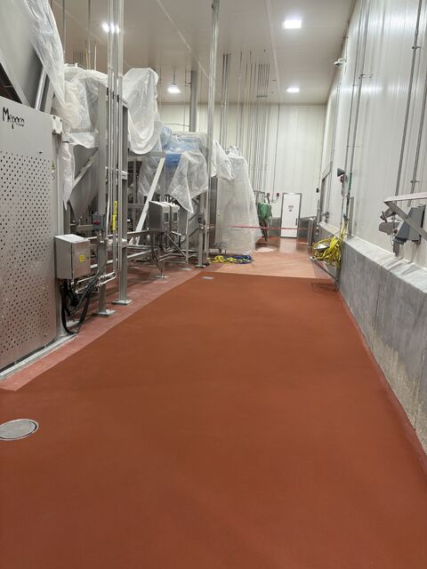

The floor in this food plant looked fine from the top. Walk across it, though, and you could feel the problem: a hollow, slightly springy give where the old floor had pulled away from the slab.

It was floating. The old system had delaminated in spots that were not obvious from above, leaving hollow voids under the surface where water could sneak in and sit.
The Problem Was Under the Surface
In a food processing environment, hidden voids are not just a flooring defect. They can hold trapped moisture, create a harborage point, and let a floor quietly fail while it still looks presentable during a quick walk-through.
That is why a floor that only looks good on top is not protecting anything. If the system has separated from the slab, patching the surface does not solve the real problem underneath.
Remove the Failure, Then Rebuild
Our crew took the failed system all the way out. We jackhammered the old floor off, scarified the slab back to sound substrate, and installed SaniCrete STX cementitious urethane the way it should be done.




No Guessing What Is Hiding Underneath
The finished floor is bonded to sound substrate and built for the plant conditions it has to live in: washdowns, traffic, moisture, cleaning chemicals, and production abuse.
Now the plant has a floor that holds up all the way down, not just one that looks acceptable from above.